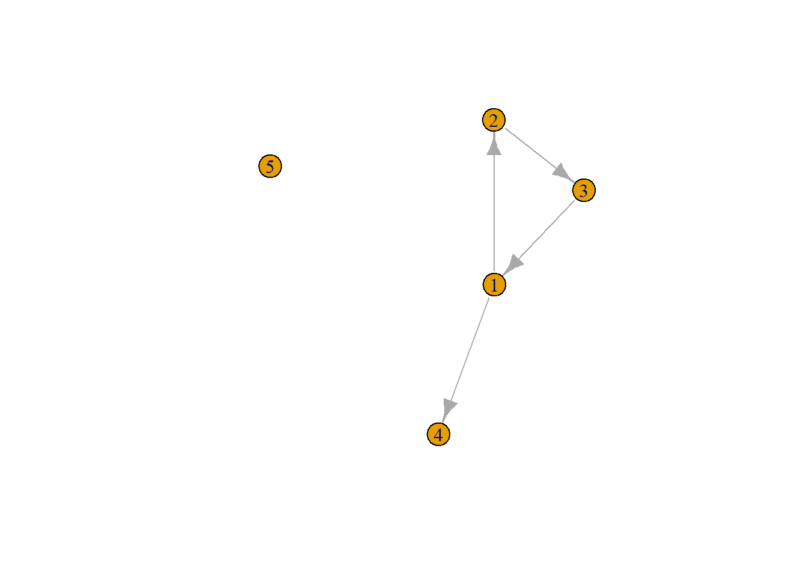

7 Creating a dyads-as-cases dataset from a graph
For some analyses, it can be useful to have a dataset in which the rows represent all all dyads (i.e., all pairs of nodes) in the network, with a variable (0/1) indicating whether they are connected. Conceptually, this is similar to an adjacency matrix in which each cell represents a connection between two nodes, but here, we have a row for each cell. As always, we start with loading the relevant packages.
As an example, we use a small toy data set, which contains (fictional) “name generator” data for two groups of individuals.
url1 <- "https://github.com/rensec/sasr08/raw/main/toy_name_generator_data.csv"
df <- read.csv(file = url1)
table(df$schoolnr)##
## 1a 2b
## 5 5We extract the data for one of the groups, and create a graph from it:
cls <- "1a"
edge_list <- df %>%
filter(schoolnr == cls) %>%
select(namenr, friend1:friend2) %>%
melt(id.vars = "namenr") %>% #make long
filter(!is.na(value)) %>% # drop the missings
rename(from ="namenr", to = "value", sourcevar= "variable") %>% #just nice for interpretation
relocate(to, .after=from) #move around the columns
nodelist <- df %>%
filter(schoolnr == cls) %>%
select(namenr,age)
g1a <- graph_from_data_frame(edge_list, vertices = nodelist)
plot(g1a)
7.0.1 Create a dyads-as-cases dataset
From the igraph object, we can create a dyads-as-cases dataset. We start by extracting the edges from the graph, and adding a variable indicating that they are connected. Then, we create a list of all possible combinations of nodes, and match this to the list of edges. If there is no connection, we set the variable to 0.
Note the use of the igraph:: namespace to avoid a conflict with the dplyr function by the same name. Note furthermore that we first created an igraph object from the edge list, and now extract the edge list from the igraph object. We could have skipped both steps altogether and work directly from the edge list, but the igraph object is still nice to have to plot the network. Without these steps, we would not need igraph at all.
dyads <- igraph::as_data_frame(g1a, what = "edges") # start with extracting all edges from the graph object
dyads$connected <- 1 # add a variable indicating that they are connected
dyads <- dyads %>%
full_join(expand.grid(from = V(g1a)$name, to = V(g1a)$name), by = c("from", "to")) %>% # create a list of all combinations of nodes, and match this to whether they are connected
mutate(connected = ifelse(is.na(connected), 0, connected)) %>% # if there is no connection, set connected to 0
select(from, to, connected) # keep only from, to and connectedWe now have a data frame with 25 rows. Verify for yourself that this is indeed the number of rows we should expect.
Note that while the “connected” variable is now a binary variable, conceptually, this could also take other values, for example values that represent the strength of the connection, or negative values.
Next, we can merge this data set with the original data, to add information about the nodes. Because the node names are extracted from the igraph object as characters, we need to convert them to numeric values first.
dyads <- dyads %>%
mutate(from = as.numeric(from), to = as.numeric(to)) %>% # convert the node names to numeric)
left_join(nodelist %>% select(namenr, age), by = c("from" = "namenr")) %>%
filter(from != to) %>% # remove the diagonal
rename(age_from = age) %>%
left_join(nodelist %>% select(namenr, age), by = c("to" = "namenr")) %>%
rename(age_to = age)With this information added, we can can also calculate further characteristics of the dyads, such as the age difference between the nodes.
ASSIGNMENT: Add a variable that contains the absolute age difference between the two nodes in the dyad.
Next, we save the data as a CSV file
7.0.2 Extend to multiple networks
The code above can be extended to multiple networks. We can use a function to create the dyads-as-cases dataset for each subset in df, and then apply this function to each network.
create_dyads <- function(subnet){
# Create the edgelist
dyads <- subnet %>%
select(namenr, friend1:friend2) %>%
melt(id.vars = "namenr") %>% #make long
filter(!is.na(value)) %>% # drop the missings
rename(from ="namenr", to = "value", sourcevar= "variable") %>% #just nice for interpretation
relocate(to, .after=from) #move around the columns
dyads$connected <- 1 # add a variable indicating that they are connected
# Create a list of all possible dyads
dyads <- dyads %>%
full_join(expand.grid(from = subnet$namenr, to = subnet$namenr), by = c("from", "to")) %>% # create a list of all combinations of nodes, and match this to whether they are connected
mutate(connected = ifelse(is.na(connected), 0, connected)) %>% # if there is no connection, set connected to 0
select(from, to, connected) # keep only from, to and connected
# Add the group identifier
dyads$schoolnr <- unique(subnet$schoolnr)
dyads <- select(dyads, schoolnr, from, to, connected) # and move it to the front for convenience
return(dyads)
}We can now apply this function to each subset of the data frame, and then bind the results together.
dyads <- df %>%
group_split(schoolnr) %>% # Split the dataframe into a list of dataframes, one for each value of schoolnr
map(create_dyads) %>% # apply the function to each subset
list_rbind() # bind the results togetherFrom here, we can add the node information as before, matching on “from” or “to” and “schoolnr”.
ASSIGNMENT: Add a variable the variables “age_from”, “age_to”, and “age_diff” once more.
QUESTION: We now create an edge list for each subgroup (class) in the data set, process that, and add the results together. We could also try to take the entire data set at once, follow the same procedure, and create one large dyads-as-cases data set. What would go wrong if we did that (hint: there are multiple things)?